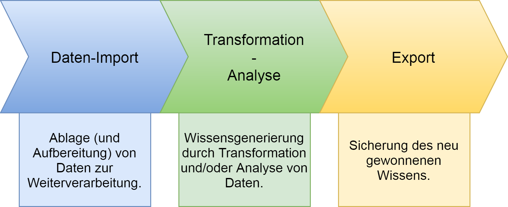
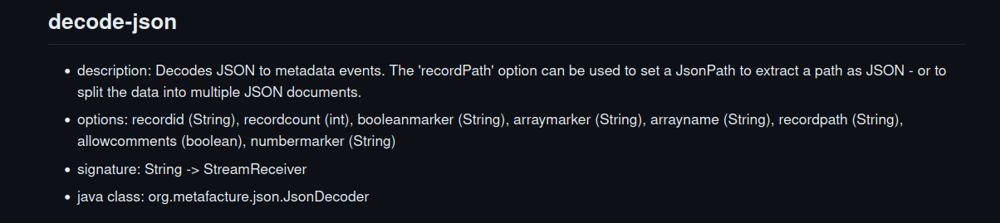

Metadatenworkflows mit Metafacture erstellen und verwalten
Pascal Christoph
&
Tobias Bülte
Offene Infrastruktur,
Hochschulbibliothekszentrum NRW (hbz)
Hands-on Lab
111. BiblioCon
Hannover, 25. Mai 2023
https://slides.lobid.org/2023-05-metafacture-workshop/ :
(PDF)

Kurze Vorstellungsrunde
- Wer (Name)
- Wo (an welcher Institution beschäftigt)
- Was (Hintergund: Technik oder Bibliothekar:in oder ...)
Agenda
- Einführung & Kontext
- Workflows
- Transformieren
- Analysieren
- Zusammenführen
- Ausblick, Fragen & Diskussion
1. Kontext: Datentransformation
ETL: Extract, Transform, Load
 -Aus: culturegraph, https://github.com/culturegraph/culturegraph-workflow/blob/master/docs/src/docs/asciidoc/manual.adoc
Anwendungsszenarien
Datenanalyse, z.B. Feldabdeckung im Katalog
Datenaufbereitung, z.B. zur Visualisierung mit Kibana
Datenanreicherung, z.B. Ergänzung von Daten aus Wikidata
Datenaggregation aus unterschiedlichen Quellen, z.B. OERSI
Systemmigration, z.B. nach Alma oder Folio
Wo wir Metafacture nutzen
Transformation der Daten des Verbundkatalogs für die Indexierung (lobid.org)
Metadaten aus verschiedenen Quellen im OER Suchindex aggregieren (OERSI)
Transformation der Daten der Rheinland-Pfälzischen Bibliographie
Nur ein kleiner Teil
Sehr vielseitiges Tool mit vielen Anwendungsmöglichkeiten, Formaten, Modulen
Wir nutzen davon nur einen kleinen Teil, eben für unsere Formate und Anwendungsfälle
Wir versuchen euch hier einen möglichst breiten Überblick zu geben über Konzepte und Möglichkeiten
Quasi ein Teaser was grundsätzlich geht, das würde man je nach Anwendungsfall ganz unterschiedlich vertiefen
Annahmen
Transformationen von Metadaten gehören zum täglichen Geschäft wissenschaftlicher Bibliotheken.
Es gibt viele unterschiedliche Methoden, die meist Programmierkenntnisse voraussetzen.
Datentransformationen werden meist im Zusammenspiel von Fachabteilungen & IT umgesetzt, verbunden mit größerem Kommunikationsaufwand.
Bereits existierende, von anderen entwickelte Transformationsprozesse können nur bedingt entdeckt und nachgenutzt werden.
Das heißt:
Es gibt großes Potential, eine immer wiederkehrende Arbeit zugänglicher, kollaborativer und effizienter zu gestalten.
Übergeordnete Ziele
Ermächtigung der Fachebene zur Konfiguration von Datentransformationen
Förderung von Praktiken zum Teilen und Auffinden von Transformationsprozessen
Was ist Metafacture?
Ein vielseitiges ETL-Werkzeug zur Verarbeitung von semi-strukturierten Daten mit dem Fokus auf Bibliotheksdaten
nutzbar als Kommandozeilentool, als Java/JVM library,
für Batch-Verarbeitung oder on-the-fly
offenes Framework: Weiterentwicklung, Wiederverwendung und Austausch (von einzelnen Modulen und ganzen Workflows)
Metafacture-Historie
2011: Start der Entwicklung durch DNB im Rahmen von Culturegraph auf sourceforge; damals schon Austausch mit dem hbz
2019: Mit der Zeit immer weniger DNB-Ressourcen für Metafacture. hbz wird Maintainer
ETL
-Aus: culturegraph, https://github.com/culturegraph/culturegraph-workflow/blob/master/docs/src/docs/asciidoc/manual.adoc
Wie Metafacture funktioniert
Grundidee: Daten fließen durch mehrere Module:
→ read → decode
→ transform → encode → write →
Jedes Modul erwartet Input eines bestimmten Typs und erzeugt Output eines bestimmten Typs
Verschiedene Formate werden unterstützt (z.B. PICA, MARC), erweiterbares Framework für eigene Formate
Mittels Kombination einzelner Module bauen wir einen Workflow, durch die unsere Daten fließen
Metafacture-Module

Autoren: Tobias & Pascal (2021-2023)
2. Metafacture-Workflows
Ein Workflow
 Basierend auf: Christoph Böhme, http://swib.org/swib13/slides/boehme_swib13_131.pdf
Basierend auf: Christoph Böhme, http://swib.org/swib13/slides/boehme_swib13_131.pdf
"dateiName"|open-file|as-lines|decode-pica|encode-json|write("stdout");
(Beispiel-Inhalt einer "flux" Datei)
Workflows konfigurieren und ausführen
Workflows können in Flux (einer speziellen Konfigurationssprache) oder mit Java (typsicher über Java Generics) bearbeitet werden
Flux-Workflows können in einem Texteditor editiert und auf der Kommandozeile ausgeführt werden; Java-Workflows funktionieren wie andere Java-Komponenten
Der Workshop führt in die Nutzung der Flux-Workflows ein, zum Ausführen verwenden wir den Metafacture Playground
Flux-Dokumentation
Was für Module gibt es? Was machen die?
https://github.com/metafacture/metafacture-documentation/blob/master/flux-commands.md

Metafacture Playground
Webbasierte Oberfläche zum Ausprobieren und Austauschen von Workflows
Ziel: Einstiegshürde für Metafacture senken, unserer Erfahrung nach ein zentrales Problem bei der Metafacture-Nutzung
Für Entwicklung, Dokumentation, Tutorials, Workshops
(die folgenden Screenshots verlinken die Beispiele zum Ausprobieren im Playground)
(die folgenden Screenshots verlinken die Beispiele zum Ausprobieren im Playground)
Nutze die Variable PG_DATA und dem Data-Fenster
(die folgenden Screenshots verlinken die Beispiele zum Ausprobieren im Playground)
(die folgenden Screenshots verlinken die Beispiele zum Ausprobieren im Playground)
Übung: Formatierung & Optionen
Playground-Beispiel anpassen:
PG_DATA
| as-lines
| decode-pica
| encode-json(prettyPrinting = "true")
| print
;
 sample1_PICA_to_JSON
sample1_PICA_to_JSON
Übung:
Marc21-Daten aus dem Web öffnen und zu YAML transformieren
"https://raw.githubusercontent.com/metafacture/metafacture-core/master/metafacture-runner/src/main/dist/examples/read/marc21/10.marc21"
| open-http
...
;
`open-http` ruft Daten aus dem Web ab.
Schaut in die Doku, wie ihr MARC21 decodiert und YAML encodiert
3. Transformieren
ETL: Transformation
Transformieren
Manipulation von Feldnamen und -werten; filtern, kombinieren, trennen, normalisieren etc.
Änderung der Struktur und Hierarchie eines Records etc.
Feldwerte aus Lookup-Tabellen in externen Dateien (z.B. Freitextfelder -> kontrollierte Vokabulare)
Transformationsmodule
Fix: eigene, Catmandu-Fix-artige Sprache, Record-basiert
Morph: XML-basiert, Feld- / Metadaten-Event-Ebene
Metafacture Fix: Ziele
Erleichterung der Transformationskonfiguration
Anknüpfung an existierende Konfigurationssprache aus Catmandu (mittelfristiges Ziel: Standardisierung, s. https://github.com/elag/FIG)
Vergrößerung der Zielgruppe um Bibliothekar:innen und andere Metadatenfachleute (bei uns z.B. in OERSI, erster Anwendungsfall und Entwicklungsbegleitung zu Fix)
Kurzer Exkurs: Metadatenstrukturen
title: Ordinary Vices
author: Judith Shklar
publisher: Belknap Press
date: 1984
Metadaten: Beschreibende, strukturierte Aussagen: Gegenstand -> Beschreibungsbeziehung -> Beschreibungsinhalt
Record/Datensatz: eine Sammlung von Aussagen über einen Gegenstand (z.B. Buch)
Element/Feld(/Property/Attribute/Key): Eine Beschreibungsbeziehung eines Gegenstands. Kann je nach Datentyp wiederholt werden oder nicht
Wert/value: Beschreibungsinhalt einer Aussage`
Kurzer Exkurs: Metadatenstrukturen-Besonderheiten
Unterfeld/Unterelement: Unter ein anderes Feld untergeordnetes Feld
author:
firstName: Judith
lastName: Shklar
Attribute (im Kontext XML): Eine zugeordnete Beschreibung neben dem Wert des Elements
Judith Shklar
Array/Liste
keywords:
- Hund
- Katze
- Maus
Felder anwählen: Pfade
Um die verschiedenen Elemente und Felder für die Transformation anzuwählen, muss man ihre Pfade angeben
Einfache Elemente der obersten Ebene / Felder: z.B. `title`
Elemente auf einer unteren Ebene / Unterfelder: z.B. `title.subtitle`
Wiederholte Felder/Listen werden als Listen mit Index-Nummer angegeben: z.B. `creator.1.name.firstName`
Felder anwählen: Besonderheiten
JSON-Arrays bekommen in der FIX am Ende des Namens einen Arraymarker: "array[]"
Regex: `?` und `*` für Feldnamen und `*` für Indexnummern
Feld-Pfad-Übersicht
Bevor man anfängt mit Feldern zu arbeiten ist es nützlich eine Übersicht zu bekommen
Dazu wollen wir die verfügbaren Feld-Pfade und ihre Werte ausgeben
Dabei wollen wir hierarchische Unterfeld-Strukturen in "flache", adressierbare Pfade (wie `title.subtitle`) umwandeln
Dabei hilft uns das Flux-Commando `list-fix-paths`
Feld auswählen
Auf Basis dieser Übersicht ein Feld auswählen, z.B. 021A (Titel)
 sample4-PICA-FIX-retain-021A_JSON
sample4-PICA-FIX-retain-021A_JSON
move_field, paste, retain
{"a": "Faust", "b": {"n": "Goethe", "v": "JW"}, "c": "Weimar"}
{"a": "Räuber", "b": {"n": "Schiller", "v": "F"}, "c": "Weimar"}
move_field(a, title)
paste(author, b.v, b.n, '~aus', c)
retain(title, author)
Übung
z.B. Titel, Verlag, Erscheinungsort und -jahr aus den PICA-Feldern 021A.a, 033A.n, 033A.p, 011@.a verwenden
Verlag und Erscheinungsort sollen in einem neuen Feld kombiniert werden
Als Feldnamen wollen wir sprechende, nicht-numerische Bezeichnungen haben
Lookup
"Feldwerte aus Lookup-Tabellen in externen Dateien (z.B. Freitextfelder -> kontrollierte Vokabulare)"
Übung
Feld 002@.0 → dcterms:format
In 002@.0, Position 1, A: print, B: audiovisual, O: online
z.B. mit copy_field, substring, lookup, retain, s. Dokumentation
 sample3x_Lookup_fields
sample3x_Lookup_fields
Analysieren
Beispiel: Feldwerte zählen
Anzahl unterschiedlicher Werte im Edition-Feld (032@.a)
PG_DATA
| as-lines
| decode-pica
| list-fix-values("032@.a")
| print
;
Daten per URL lesen
Statt aus Datei lesen (oder PG_DATA) auch per URL möglich
Statt `"some.file" | open-file ...` → `"http://..." | open-http`
Aufgabe: voriges Beispiel, aber von URL lesen, was fällt auf?
https://github.com/hbz/metafacture-flux-examples/blob/master/sample4/bib-data-1k.pica?raw=true
Fix: was u.a. nicht vorkam
Conditionals: if, elsif, else, unless
Wiederholte Felder / Arrays; Zugriff, Manipulation, Iteration
Regular Expressions: Muster in Werten erkennen, zerlegen, ersetzen
Daten aus verschiedenen Quellen sammeln und zu Records zusammensetzen: `collect-triples`
Fix: Beispiele & Dokumentation
Beispiele: produktiv in OERSI (diverse Web-Quellen → JSON), für ALMA hbz-Verbundkatalog (ALMA MARC → JSON) und Rheinland-Pfälzische Bibliographie (Allegro → JSON)
Integration-Tests: Input, Flux, Fix, Output als Dateien wie bei Real-World-Setup
7. Ausblick, Fragen & Diskussion
Ausblick
Fix & Playground weiterentwickeln
Fix-Funktionalität erweitern, Fehler beheben, Catmandu-Kompatibilität erhöhen
Playground weiter verbessern, z.B. mehr Hinweise im Editor, integrierte Dokumentation (was gibt es für Module, wie kann ich sie kombinieren)
Standards nutzen und aufbauen
SKOS Lookups (zum Andocken an SkoHub Vocabs)
Entity Reconciliation mit OpenRefine-kompatiblen Diensten
Fix-Standardisierung, s. https://github.com/elag/FIG
ETL Hub
ETL: Extract, Transform, Load
mehr Kollaboration, Teilen & Auffinden von Workflows ermöglichen (nicht nur für Metafacture)
Entwicklung von Best Practices zur Paketierung und Beschreibung von ETL-Konfigurationen
Aufbau eines ETL Hubs zum Entdecken existierender ETL-Prozesse für die einfache Nachnutzung und Anpassung
Fragen und Diskussion
... gerne auch gleich am Stand der Verbünde (14:00 - 15:00)